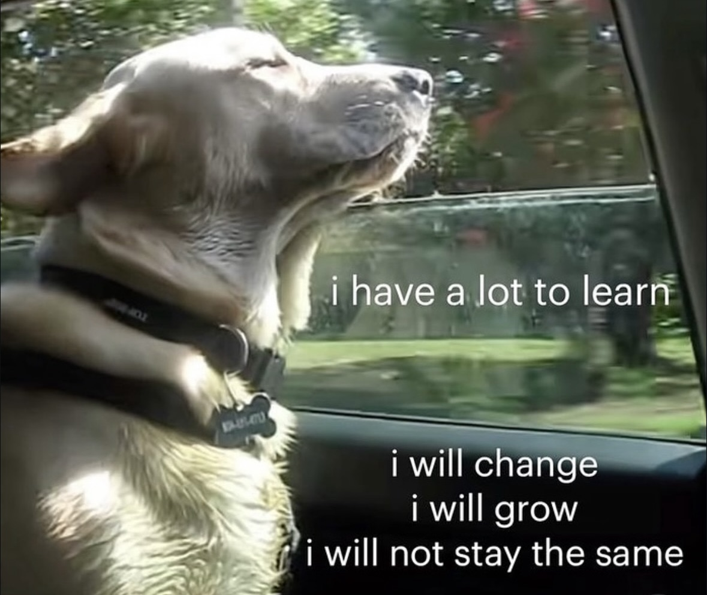
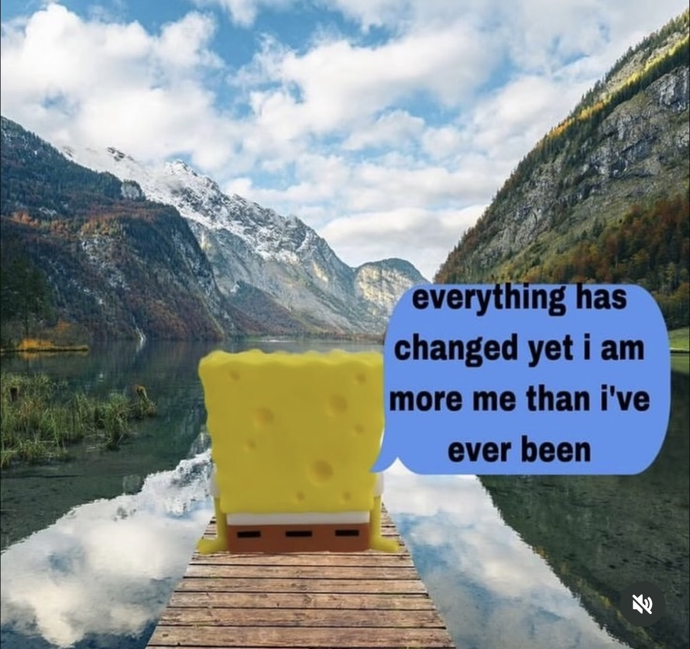
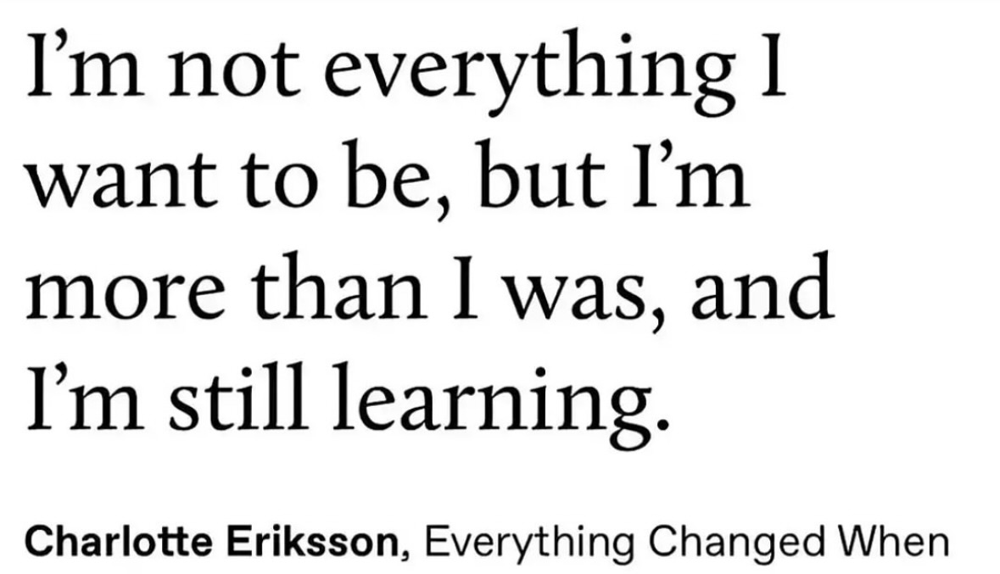

← back to Exploration
Art
beautiful, ordinary life
4 November 2022 · poetry, reflections, art experiments
04/11/22. and turning 22.
and i sat down
and bits of my life
especially the past year
that were so confusing, difficult, stupid, and young
start playing in my head like a film.
and for the first time
i started to see so many things
outside of the uncertainty and pains.
like the incredible, beautiful backdrops of London and Edinburgh.
the smell of autumn on the dark streets i walked at 6am.
my summer of solo museum & gallery trips and food dates.
the joys and pains that music in its many forms brought to my life.
the times i laughed until i cried with people i love.
the beautiful age of 21.
uncertain, anxious,
creative, reckless, and dumb,
loving and learning so much until i went mad.
and turning 22
by myself on a train
looking back at my beautiful,
ordinary life.
<3



← back to Exploration